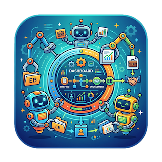

BriefingClaw
Live Demo Dashboard — BriefingClaw GACEP Edition
Presentation Mode (P to toggle)
SIMULATED
Briefing Request
Awaiting input...
Phase 0 · Decomposition
Frontier
🎯
Oprah-tor
Orchestrator
Phase 1 · Intelligence Gathering (parallel)
Frontier
🔍
Sherlock Ohms
Executive Research
Frontier
🏢
Bloom-borg
Account Intelligence
Local
📋
Déjà View
SAB Historian
Phase 2 · Assembly & Protocol (parallel)
Local
📄
Draft Punk
Briefing Architect
Local
⭐
Alfred Bitworth
VVIP Protocol
Phase 3 · Success Prediction
Local
🎲
The Oddsfather
Success Predictor
Briefing Package
0 / 8
Sarah Chen — CIO, Meridian Health Systems
David Park — SVP Technology, Apex Financial Group
Rachel Morrison — CTO, TerraScale Energy
Pepper Minton — CTO, SnackStack Technologies
Ziggy Stardust-Chen — VP Platform Eng, Quantum Pretzel Corp
Luna Wavelength — CIO, GalactiCorp Space Industries
Max Bandwidth — SVP Digital, Thunderbolt Logistics
Sage Cloudberry — CIO, WonderPaws Pet Wellness
Start Demo
Reset
📄 Export PDF
00:00
Infrastructure Status
System
Podman Desktop
Container runtime
Granite 8B
:8001
OpenClaw Gateway
:18789
ZeroClaw
Native binary
Agent Activity
Live Feed
Deliverables
0 / 8
📋
Executive Dossier
Draft Punk
📑
Briefing Backgrounder
Draft Punk
💬
Sponsor Talking Points
Draft Punk
📅
Recommended Agenda
Draft Punk
💡
Conversation Starters
Draft Punk
✅
VVIP Protocol Checklist
Alfred Bitworth
📧
Sponsor Alert Email
Alfred Bitworth
📝
Engagement Log Entry
Alfred Bitworth
Critical Flags
0 alerts
No flags yet. Waiting for agent analysis...
←
1 / 8
→
×